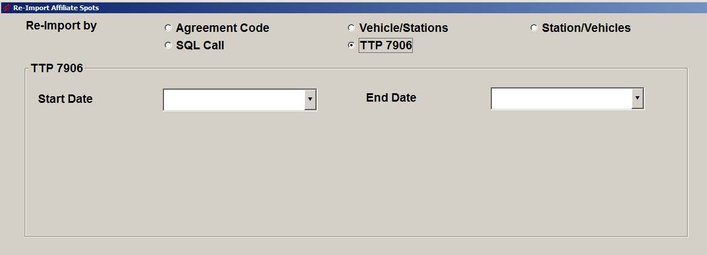

Re-Import Affiliate Spots
Overview
The Re-Import Affiliate Spots utility is used to re-import posting information directly from the Counterpoint Affidavit system and from Marketron Direct Connect. This utility can only be run to re-import spot information that has previously been imported; it will not import data that has not yet been imported. The purpose of re-importing a previously imported week would be to correct an error with the posting information that occurred after importing the spots from either the Counterpoint Affidavit website or Marketron Direct Connect so that the airing information reverts back to what was originally posted by the affiliate.
Running the Utility
To launch the utility, go to File -> Utilities, and select “Re-Import Affiliate Spots”. Note: This utility is only available in version 7.0 and higher.
When starting the utility, the user will be prompted to enter a password to continue. The password must be obtained from Counterpoint support.
After entering the password obtained from Counterpoint, the utility screen will appear. There are five ways the utility can be run: Agreement Code, Vehicle/Stations, Station/Vehicles, SQL Call, and TTP 7906. The different methods can be selected by selecting the corresponding radio button near the top of the screen.
After the utility finishes processing, the “ReImportAffiliateSpots” log file can be retrieved and viewed from the Messages folder to see what was processed.
The following sections explain each of the four methods of running the utility.
Agreement Code
The agreement code method can be used when the internal agreement code is known, and only one agreement requires re-importing.
To re-import using the agreement code:
- After the agreement code has been determined, enter the agreement code in the “agreement code” field.
- Enter the start date in the “Start Date” field.
- Enter the number of weeks to re-import in the “number of weeks” field.
- Press the Re-Import button.
Vehicle/Stations
The Vehicle/Stations method allows the re-import to be run for a single vehicle and one or several stations affiliated with that vehicle.
To run the re-import by Vehicle/Stations:
- Enter the start date in the “Start Date” field.
- Enter the number of weeks to process in the “Number of Weeks” field.
- Select the vehicle to process.
- Select the station or stations from the list of stations.
- Press the Re-Import button.
Station/Vehicles
The Station/Vehicles method allows the re-import to be run for a single station and one or multiple vehicles.
To run the re-import by Station/Vehicles:
- Enter the start date in the “Start Date” field.
- Enter the number of weeks to re-import in the “Number of Weeks” field.
- Select the station to process.
- Select the vehicle or vehicles.
- Press Re-Import.
SQL Call
This method is used when the criteria for the re-import that needs to be run is too complex for the other three methods. If the SQL Call method is needed, Counterpoint Software will provide the SQL Call that needs to be run.
To re-import using a SQL Call, copy and paste the SQL Call provided by Counterpoint in the “SQL Call” field then press the Re-Import button to run the re-import.
TTP 7906
This method will re-import weeks that meet the following criteria:
- The affidavit must be within the entered date range.
- The affidavit must be from an ROS agreement.
- The affidavit must be fully posted and imported back into the affiliate system.
- All the spot air times must match the pledge start time for the week being processed.
If all the conditions described above are true, then the affidavit will be re-imported.

To run this method, enter start and end dates then press Re-Import. Alternatively, the dates can be left blank to process all dates. When the End Date is blank, an internal table used to store queued tasks for the Station Spot Builder will also be cleared.